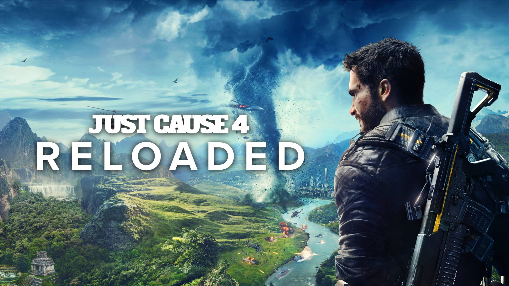

SEKIRO

1500年代後半、戦国時代末期の日本におけるとある北国が舞台となる。 「剣聖」葦名一心による国盗り戦から二十余年の時が経ち、かつて急伸の如く栄えのあった葦名の国は、 時代の流れとともに存亡の危機に瀕していた。 国を興した一心は病に伏し、隙を突くかのように強大な内府軍が押し寄せる。
JUST CAUSE4

JUST CAUSE4公式
南米にある架空の大国「ソリス」を舞台に、CIAに所属するリコ・ロドリゲスが、 よりパワーアップしたド派手アクションをひっさげ、独裁者エスピノーサと対峙するという内容だ。 リゾートビーチに砂漠、雪山、都市部と、地域ごとに全く異なる雰囲気の景色が楽しめるソリス。